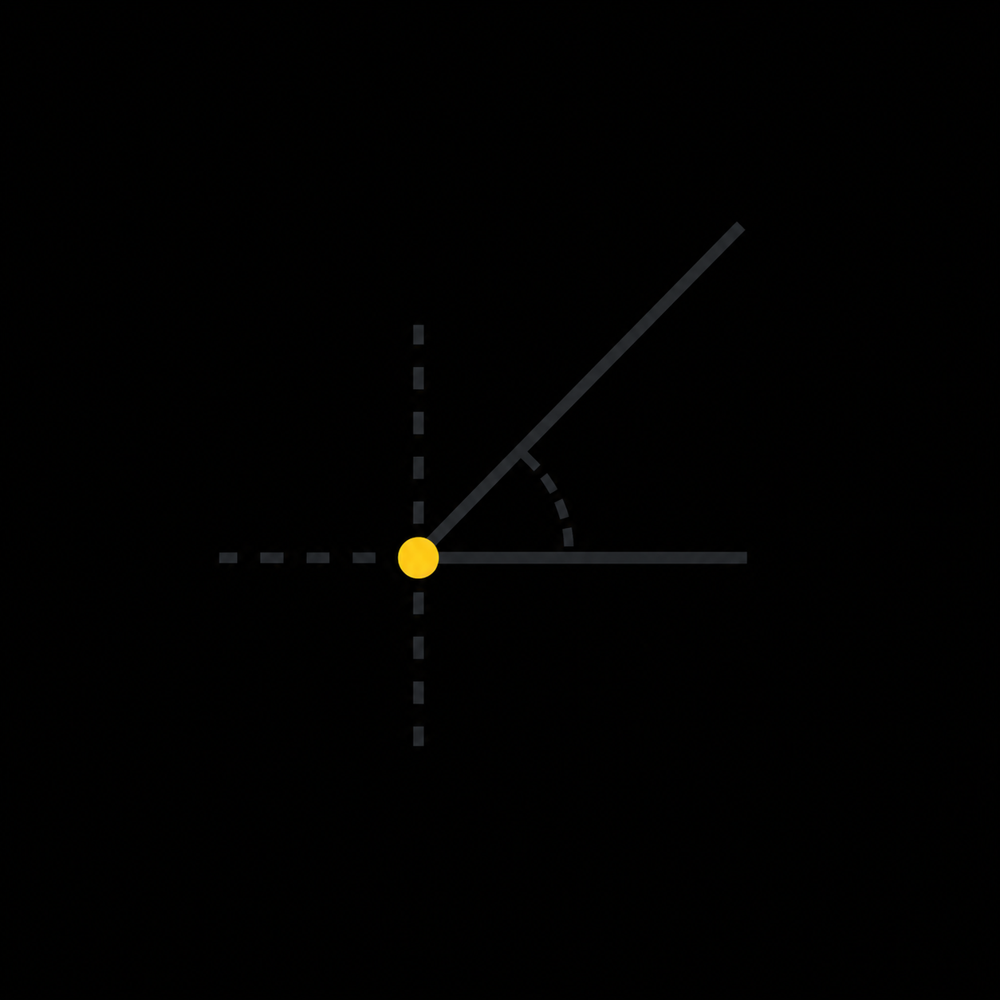
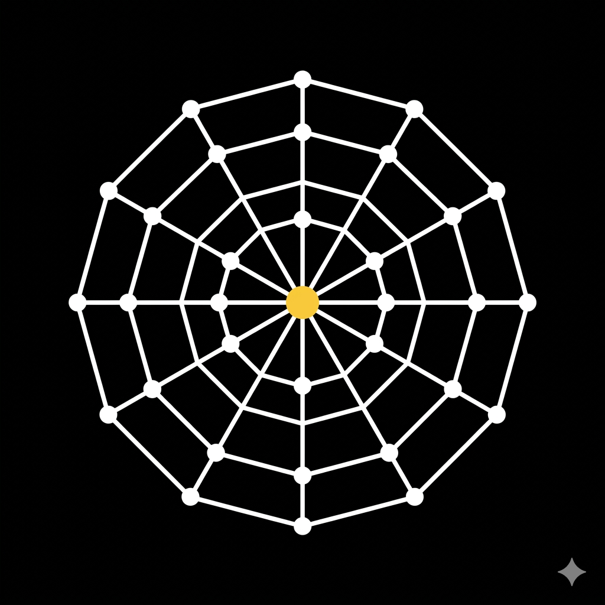

Stop Cognitive
Fragmentation.
Lowkey collapses the entire development circle into a single native process frame. Pitch-black aesthetics meet elite hardware performance.
The Absolute Canvas.
Lowkey implements an aggressive minimal aesthetic where design elements fade into absolute black unless they require immediate developer action. This maximizes screen contrast for typography while minimizing OLED power draw.
- Native Subpixel Anti-aliasing
- Zero-Friction Communication Gates
- Pitch-Black (#000000) Canvas

Visual Intelligence.
Dash alters its operational accent color based on the underlying AI engine. This provides an immediate psychological cue for the model's capabilities and cost profile.
Gemini 2.0 / Groq Pool
Local llama.cpp Mesh
Anthropic Engine (Claude)
Google Cloud Engine
OpenAI GPT-4o Connected
Perplexity Search API
Zero-Latency Sync.
Globe collapses the distance between remote teams. By leveraging a P2P WebRTC mesh, Lowkey synchronizes file buffers and PTY streams directly between developer nodes.

Mission Control Features.
Colors IDE
A virtualized viewport mapping framework. Handles 50k+ line files with zero UI thread blocking.
Native Terminal
Direct fork of the OS native command layer. Low-latency ANSI token translation loop.
Dash Vault
Secure local storage for all BYOK keys. Encrypted via Libsodium with hardware isolation.
Discord Liaison
Zero-friction communication gates. Interact with team threads without leaving the IDE.
Local Mesh
Run Ollama or llama.cpp models offline. Total privacy for sensitive code analysis.
Tauri Core
High-performance Rust backend. OS-native system bindings with minimal memory footprint.
System Requirements.
| METRIC | LOWKEY ENGINE | INDUSTRY AVG. |
|---|---|---|
| Idle RAM | 42MB | 850MB+ |
| Input Latency | < 0.5ms | ~15ms |
| Binary Size | 12MB | 300MB+ |
| Security | Air-Gapped / E2EE | Cloud-First |
ENGINE EFFICIENCY
Lowkey achieves η=99.8% through asynchronous IPC channels and off-main-thread text rendering.